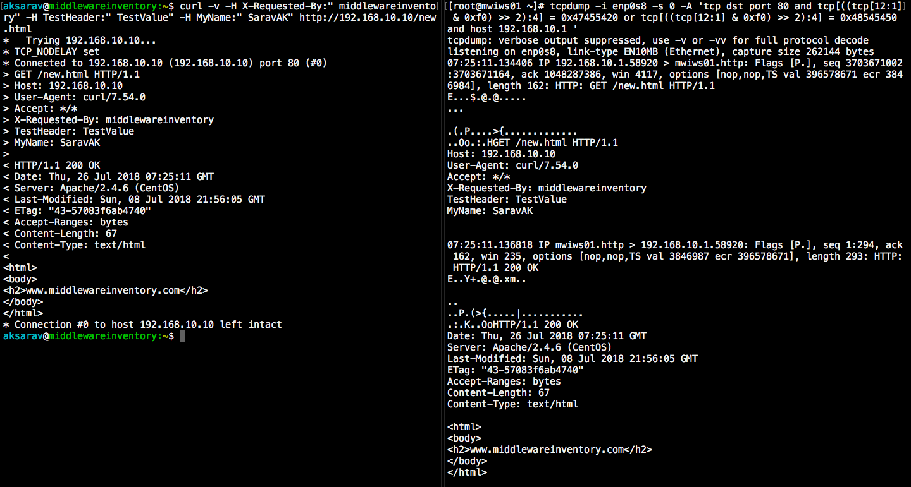

TCPDUMP is a swiss army knife for all the administrators and developers when it comes to troubleshooting. This post is written for the people who work in middleware technologies. Web servers such as Apache, NGINX, Oracle HTTP, IHS web servers and application servers such as Weblogic, Websphere, Tomcat, Jboss
Consider yourself in any of the following scenarios
- You want to monitor the traffic inflow and outflow of Apache httpd server on any specific port like port 80 or 443
- You have to track the HTTP calls between web and application servers (or) to make sure that proxy is working fine.
- When you want to examine the presence and values of specific headers like
X-Forwarded-For X-Forwarded-Proto X-Forwarded-Port X-Forwarded-Host X-Frame-Options X-Forwarded-By ETag
- When you want to review the Cookies being placed in the request and response
- when you want to review the data which is being posted to the server in the POST method like
Content-type: multipart/form-data; Content-Type: application/x-www-form-urlencoded Content-Type: application/json Content-Type: text/plain
- To track the incoming web service call, made using SOAP UI (or) any web service client.
So, How do you do that?
The answer is TCPDUMP. TCPDUMP is mostly misconceived as a network engineer’s subject and it displays some incomprehensible binary data that none of us could understand.
With proper tools and little knowledge about protocols, anyone can easily make use of it and feel the magic lies within.
Be informed that the industry standards have changed for good and the HTTPS is becoming a basic requirement for all webservices and websites. So it might make your troubleshooting little hard, since the packets are encrypted. There is a solution to decrypt HTTPS traffic
Refer my another article on How to decrypt HTTPS traffic to see headers and request/response content
The Objective
In this post, we are going to see how middleware administrators (or) developers could use tcpdump to accomplish their troubleshooting drama.
We are going to discuss the following items , practically as much as possible.
- How to monitor/track HTTP and HTTPS calls with tcpdump in weblogic,WebSphere,tomcat application servers and web servers like Apache which runs on LINUX platform
- How to tamper and read the incoming and outgoing HTTP traffic to our applications deployed in weblogic
- How to dig into the incoming (or) outgoing HTTP traffic and take a look at the concrete elements of HTTP protocol such as headers, cookies, request body as they gets transmitted.
- How to intercept the HTTP traffic initiated from the browser (or) SOAP UI to application server and sneak a peek into the content like Request Body like XML,JSON and Username and Password etc.
- How to monitor the incoming SOAP web service request body (or) request XML
- More practical examples on how to use TCPDUMP to analyze the HTTP traffic
Before we proceed
Some basics about how to run tcpdump in your server in the right way.
Make sure tcpdump is installed and configured properly
[[email protected] ~]# tcpdump – version tcpdump version 4.9.2 libpcap version 1.5.3 OpenSSL 1.0.2k-fips 26 Jan 2017
Use the right interface name (or) use any in the interface name.
To Get the interface name of your IP which you need to specify it in the tcpdump command. you can execut the command ifconfig (or) ip a
In my case, My web server IP is 192.168.10.10 so I should pick and use the interface name of the same enp0s8
Once you found your interface. In the requests you are going to track. you must mention the interface name
tcpdump -i enp0s8
you can optionally monitor all the available interfaces by mentioning
tcpdump -i any
Now we are All ready to Play.
TCPDUMP Examples
TCPDUMP does the same job irrespective to what technology (or) server you are using it for. In other words, if you would like capture HTTP calls for Apache. You mostly going to be using the port 80 or 443.
If you would like to capture the traffic of weblogic (or) Websphere or any application servers. All you have to do is change the port number in which your application server is listening
Though we have given examples for both web and application servers here. All you should be aware of is that. There is nothing specific to technology. We just change the port number (or) interface. That’s all.
How to capture All incoming HTTP GET traffic (or) requests
tcpdump -i enp0s8 -s 0 -A 'tcp[((tcp[12:1] & 0xf0) >> 2):4] = 0x47455420'
Explanation:-
tcp[((tcp[12:1] & 0xf0) >> 2):4] first determines the location of the bytes we are interested in (after the TCP header) and then selects the 4 bytes we wish to match against.
To know more about how this segment syntax has been derived. refer this link
Here
0x47455420depicts the ASCII value of characters'G' 'E' 'T' ' '
| Character | ASCII Value |
| G | 47 |
| E | 45 |
| T | 54 |
| Space | 20 |
Refer this ASCII map table for more reference
How to capture All incoming HTTP POST requests
tcpdump -i enp0s8 -s 0 -A 'tcp[((tcp[12:1] & 0xf0) >> 2):4] = 0x504F5354'
Here 0x504F5354 represents the ASCII value of 'P' 'O' 'S' 'T'
Sample Output
[[email protected] ~]# tcpdump -i enp0s8 -s 0 -A 'tcp[((tcp[12:1] & 0xf0) >> 2):4] = 0x504F5354' tcpdump: verbose output suppressed, use -v or -vv for full protocol decode listening on enp0s8, link-type EN10MB (Ethernet), capture size 262144 bytes 08:12:59.552588 IP 192.168.10.1.60651 > mwiws01.http: Flags [P.], seq 1817631852:1817632015, ack 3385979723, win 4117, options [nop,nop,TS val 399453898 ecr 6715402], length 163: HTTP: POST /new.html HTTP/1.1 [email protected]@..C.. ... ...PlV.l...K........... .....fx POST /new.html HTTP/1.1 Host: 192.168.10.10 User-Agent: curl/7.54.0 Accept: */* X-Requested-By: middlewareinventory TestHeader: TestValue MyName: SaravAK ^C 1 packet captured 1 packet received by filter 0 packets dropped by kernel [[email protected] ~]#
How to capture only HTTP GET requests Incoming to port 80 ( Apache/NGINX)
tcpdump -i enp0s8 -s 0 -A 'tcp dst port 80 and tcp[((tcp[12:1] & 0xf0) >> 2):4] = 0x47455420'
Sample Output
[[email protected]1 ~]# tcpdump -i enp0s8 -s 0 -A 'tcp dst port 80 and tcp[((tcp[12:1] & 0xf0) >> 2):4] = 0x47455420' tcpdump: verbose output suppressed, use -v or -vv for full protocol decode listening on enp0s8, link-type EN10MB (Ethernet), capture size 262144 bytes 06:50:12.424996 IP 192.168.10.1.58034 > mwiws01.http: Flags [P.], seq 1518079346:1518079506, ack 1444634698, win 4117, options [nop,nop,TS val 394486908 ecr 1748275], length 160: HTTP: GET /new.html HTTP/1.1 [email protected]@.E7.. ... ...PZ|.rV.`J.....u..... ..d|...3GET /new.html HTTP/1.1 Host: 192.168.10.10 User-Agent: curl/7.54.0 Accept: */* X-Requested-By: middlewareinventory TestHeader: TestValue MyName: Sarav
How to capture only HTTP POST requests Incoming to port 80 ( Apache/NGINX)
tcpdump -i enp0s8 -s 0 -A 'tcp dst port 80 and tcp[((tcp[12:1] & 0xf0) >> 2):4] = 0x504F5354'
Sample Output
[[email protected] ~]# tcpdump -i enp0s8 -s 0 -A 'tcp dst port 80 and tcp[((tcp[12:1] & 0xf0) >> 2):4] = 0x504F5354' tcpdump: verbose output suppressed, use -v or -vv for full protocol decode listening on enp0s8, link-type EN10MB (Ethernet), capture size 262144 bytes 08:16:50.394502 IP 192.168.10.1.60759 > mwiws01.http: Flags [P.], seq 2281273674:2281273837, ack 1974611475, win 4117, options [nop,nop,TS val 399670036 ecr 6946244], length 163: HTTP: POST /new.html HTTP/1.1 [email protected]@.]... ... .W.P..yJu.......x...... ..{..i..POST /new.html HTTP/1.1 Host: 192.168.10.10 User-Agent: curl/7.54.0 Accept: */* X-Requested-By: middlewareinventory TestHeader: TestValue MyName: SaravAK ^C 1 packet captured 1 packet received by filter 0 packets dropped by kernel
How to capture only HTTP GET calls Incoming to port 443 ( Apache/NGINX)
tcpdump -i enp0s8 -s 0 -A 'tcp dst port 443 and tcp[((tcp[12:1] & 0xf0) >> 2):4] = 0x47455420'
How to capture only HTTP POST calls Incoming to port 443 ( Apache/NGINX)
tcpdump -i enp0s8 -s 0 -A 'tcp dst port 443 and tcp[((tcp[12:1] & 0xf0) >> 2):4] = 0x504F5354'
How to capture both HTTP GET (or) POST Incoming calls to port 80 (or) 443 ( Apache/NGINX) Originating from 192.168.10.1 Host
tcpdump -i enp0s8 -s 0 -A 'tcp dst port 80 or tcp dst port 443 and tcp[((tcp[12:1] & 0xf0) >> 2):4] = 0x47455420 or tcp[((tcp[12:1] & 0xf0) >> 2):4] = 0x504F5354' and host 192.168.10.1
How to capture a Complete HTTP Transmission incoming and outgoing GET and POST
Let’s suppose I access a page hosted in 192.168.10.10 web server from my base machine with ip address 192.168.10.1. using both GET and POST methods. How do we track the HTTP request and response between the server and the client
tcpdump -i enp0s8 -s 0 -A 'tcp dst port 80 and tcp[((tcp[12:1] & 0xf0) >> 2):4] = 0x47455420 or tcp[((tcp[12:1] & 0xf0) >> 2):4] = 0x504F5354 or tcp[((tcp[12:1] & 0xf0) >> 2):4] = 0x48545450 or tcp[((tcp[12:1] & 0xf0) >> 2):4] = 0x3C21444F and host 192.168.10.1'
Here additionally, we are using two more ASCII values to capture the outgoing HTML files and HTTP calls they are as follows.
0x3C21444F represents the ASCII value of '<' 'D' 'O' 'C' this is to capture the outgoing HTML file
0x48545450 represents the ASCII value of 'H' 'T' 'T' 'P' this is to capture the outgoing HTTP traffic (HTTP response)
Trying with GET

Trying with POST
In the preceding illustrations, you can see the output of tcpdump command (to the right) shows the REQUEST and RESPONSE data along with the HTML code. You can also find it aligning to the CURL’s verbose output
How to monitor all the incoming HTTP Request URL’s (POST or GET)
tcpdump -i enp0s8 -s 0 -v -n -l | egrep -i "POST /|GET /|Host:"
How to capture HTTP Passwords in POST Requests
tcpdump -i enp0s8 -s 0 -A -n -l | egrep -i "POST /|pwd=|passwd=|password=|Host:"
How to capture the Cookies from Server and from Client ( Request & Response)
tcpdump -i enp0s8 -nn -A -s0 -l | egrep -i 'Set-Cookie|Host:|Cookie:'
How to Filter HTTP User Agents
Extract HTTP User Agent from HTTP request header.
tcpdump -vvAls0 | grep 'User-Agent:'
How to capture the HTTP packets being transmitted between Webserver and Application server both GET & POST?
In cases, where you have check the HTTP traffic between webserver and application server. you can use tcpdump to diagnose and troubleshoot the issue. It will be helpful for many middleware administrators.
By this you can make sure that the websphere proxy plugin (or) weblogic proxy plugin is forwarding the HTTP calls properly. In fact, you can also see to which managed server (or) node the call is going and what data is being transmitted
Let’s suppose this is your environment
| WebServer IP | 192.168.10.4 |
| AppServer IP | 192.168.10.6 |
| AppServer Listen Port | 18001 |
You can run the following command at the application server to accomplish your requirement
tcpdump -i any -s 0 -A 'tcp dst port 18001 and tcp[((tcp[12:1] & 0xf0) >> 2):4] = 0x47455420 or tcp[((tcp[12:1] & 0xf0) >> 2):4] = 0x504F5354 or tcp[((tcp[12:1] & 0xf0) >> 2):4] = 0x48545450 or tcp[((tcp[12:1] & 0xf0) >> 2):4] = 0x3C21444F and host 192.168.10.4'
Application server Oriented examples
Setting the Context: We are using weblogic application server for this post but it does not limit the scope of this post only to weblogic. As I already mentioned earlier. All you have to change is the interface and the port.
Let me give some overview of the weblogic infrastructure been used for this post
| Application Server product | Weblogic Server 12c |
| Server Listening Port | 18001 |
| Server listen address | 192.168.60.4 |
| Application Full URL | http://192.168.60.4:18001/TestWebService |
| Application Web Service EndPoint |
http://192.168.60.4:18001/TestWebService/WS |
How to capture a Complete HTTP Transmission with TCPDUMP ( GET & POST) on specific port
All the examples we have given above can be used for weblogic with just a little change in port number. However. we are giving an example here.
Here we are going to make a call from the client with up 192.168.60.1 to our TestWebService Application using GET and POST methods and capture the HTTP traffic data at the server end
tcpdump -i enp0s8 -s 0 -A 'tcp dst port 18001 and tcp[((tcp[12:1] & 0xf0) >> 2):4] = 0x47455420 or tcp[((tcp[12:1] & 0xf0) >> 2):4] = 0x504F5354 or tcp[((tcp[12:1] & 0xf0) >> 2):4] = 0x48545450 or tcp[((tcp[12:1] & 0xf0) >> 2):4] = 0x3C21444F and host 192.168.60.1'
Sample Output
Request from 192.168.60.1 using curl -v
[email protected]:~$ curl -v "-H X-Forwarded-By: middlewareinventory" -X POST http://192.168.60.4:18001/TestWebService/ * Trying 192.168.60.4... * TCP_NODELAY set * Connected to 192.168.60.4 (192.168.60.4) port 18001 (#0) > POST /TestWebService/ HTTP/1.1 > Host: 192.168.60.4:18001 > User-Agent: curl/7.54.0 > Accept: */* > X-Forwarded-By: middlewareinventory > < HTTP/1.1 200 OK < Date: Sat, 28 Jul 2018 06:21:42 GMT < Accept-Ranges: bytes < Content-Length: 475 < Content-Type: text/html < Last-Modified: Sat, 28 Jul 2018 15:41:10 GMT < <!DOCTYPE html> <!-- To change this license header, choose License Headers in Project Properties. To change this template file, choose Tools | Templates and open the template in the editor. --> <html> <head> <title>Sample WebService Application</title> <meta charset="UTF-8"> <meta name="viewport" content="width=device-width, initial-scale=1.0"> </head> <body> <div>This is Sample WebService Application</div> </body> </html> * Connection #0 to host 192.168.60.4 left intact
Response
[[email protected] ~]# tcpdump -i enp0s8 -s 0 -A 'tcp dst port 18001 and tcp[((tcp[12:1] & 0xf0) >> 2):4] = 0x47455420 or tcp[((tcp[12:1] & 0xf0) >> 2):4] = 0x504F5354 or tcp[((tcp[12:1] & 0xf0) >> 2):4] = 0x48545450 or tcp[((tcp[12:1] & 0xf0) >> 2):4] = 0x3C21444F and host 192.168.60.1' tcpdump: verbose output suppressed, use -v or -vv for full protocol decode listening on enp0s8, link-type EN10MB (Ethernet), capture size 65535 bytes 02:49:12.424425 IP 192.168.60.1.60442 > mwiapp01.18001: Flags [P.], seq 558796881:558797017, ack 3750122298, win 4117, options [nop,nop,TS val 317440918 ecr 4685369], length 136 [email protected]@.....<...<...FQ!N.Q..S:........... .....G~9POST /TestWebService/ HTTP/1.1 Host: 192.168.60.4:18001 User-Agent: curl/7.54.0 Accept: */* X-Forwarded-By: middlewareinventory 02:49:12.426378 IP mwiapp01.18001 > 192.168.60.1.60442: Flags [P.], seq 1:171, ack 136, win 235, options [nop,nop,TS val 4685370 ecr 317440918], length 170 [email protected]@.....<...<.FQ....S:!N.......&..... .G~:....HTTP/1.1 200 OK Date: Sun, 29 Jul 2018 06:49:12 GMT Accept-Ranges: bytes Content-Length: 475 Content-Type: text/html Last-Modified: Sat, 28 Jul 2018 15:41:10 GMT 02:49:12.426683 IP mwiapp01.18001 > 192.168.60.1.60442: Flags [P.], seq 171:646, ack 136, win 235, options [nop,nop,TS val 4685371 ecr 317440920], length 475 [email protected]@.....<...<.FQ....S.!N.......W..... .G~;....<!DOCTYPE html> <!-- To change this license header, choose License Headers in Project Properties. To change this template file, choose Tools | Templates and open the template in the editor. --> <html> <head> <title>Sample WebService Application</title> <meta charset="UTF-8"> <meta name="viewport" content="width=device-width, initial-scale=1.0"> </head> <body> <div>This is Sample WebService Application</div> </body> </html>
SOAP Webservice Capture
How to capture the Webservice Traffic between Webservice endpoint deployed at weblogic and web service Client ( For example SOAP UI) ?
Here is our web service End Point
http://192.168.60.4:18001/TestWebService/WS
Here we have to two methods.
- Hello – Just to say hello to the name being passed in the request
- GetSimilarWord – To Get the string from the user and search the internet for the matching word and return a JSON array
Let’s invoke the methods in SOAP UI and see what we see in tcpdump at the server end.
[[email protected] ~]# tcpdump -i enp0s8 -s 0 -A 'tcp dst port 18001 and tcp[((tcp[12:1] & 0xf0) >> 2):4] = 0x47455420 or tcp[((tcp[12:1] & 0xf0) >> 2):4] = 0x504F5354 or tcp[((tcp[12:1] & 0xf0) >> 2):4] = 0x48545450 or tcp[((tcp[12:1] & 0xf0) >> 2):4] = 0x30313136 and host 192.168.60.1' tcpdump: verbose output suppressed, use -v or -vv for full protocol decode listening on enp0s8, link-type EN10MB (Ethernet), capture size 65535 bytes 03:25:45.147901 IP 192.168.60.1.60684 > mwiapp01.18001: Flags [P.], seq 2351207025:2351207604, ack 568016594, win 4104, options [nop,nop,TS val 319664919 ecr 6877781], length 579 [email protected]@.....<...<...FQ.$.q!.>............ ...h.UPOST /TestWebService/WS HTTP/1.1 Content-Type: text/xml cache-control: no-cache Postman-Token: 8d979543-94ff-4a32-9570-975bfa48d644 User-Agent: PostmanRuntime/7.1.1 Accept: */* Host: 192.168.60.4:18001 accept-encoding: gzip, deflate content-length: 291 Connection: keep-alive <soapenv:Envelope xmlns:soapenv="http://schemas.xmlsoap.org/soap/envelope/" xmlns:mid="https://middlewareinventory.com/"> <soapenv:Header/> <soapenv:Body> <mid:hello> <!--Optional:--> <name>AKSarav</name> </mid:hello> </soapenv:Body> </soapenv:Envelope> 03:25:45.152523 IP mwiapp01.18001 > 192.168.60.1.60684: Flags [P.], seq 1:124, ack 579, win 245, options [nop,nop,TS val 6878096 ecr 319664919], length 123 E....:@[email protected]<...<.FQ..!.>..$............. ..HTTP/1.1 200 OK Date: Sun, 29 Jul 2018 07:25:45 GMT Transfer-Encoding: chunked Content-Type: text/xml; charset=utf-8 03:25:45.152909 IP mwiapp01.18001 > 192.168.60.1.60684: Flags [P.], seq 124:410, ack 579, win 245, options [nop,nop,TS val 6878097 ecr 319664923], length 286 E..R.;@[email protected]<...<.FQ..!.?M.$............. ..0116 <?xml version='1.0' encoding='UTF-8'?><S:Envelope xmlns:S="http://schemas.xmlsoap.org/soap/envelope/"><S:Body><ns0:helloResponse xmlns:ns0="https://middlewareinventory.com/"><return>Hello AKSarav ! Welcome to middlewareinventory</return></ns0:helloResponse></S:Body></S:Envelope> ^C 3 packets captured 3 packets received by filter 0 packets dropped by kernel
You can see the SOAP XML response from the server being returned to the SOAP UI.
For those who are not familiar with SOAP UI. Use Postman as shown below.
So far we have discussed various usage and examples of TCPDUMP. But I am certain there might be a whole lot of requirements and examples that I may have missed in this post.
Instead of using the tcpdump command precisely to perform/capture request (or) response.
You could also record the tcpdump session ( take a dump of tcpdump) and analyze, In fact, it is more trustworthy and easy rather trying to write command with ASCII code matching.
How to record a TCPDUMP Session (or) Capture packets with tcpdump
To record the tcpdump session, you can use the following command
Note*: here I have used any as an interface to capture all the packets across all the channels/interfaces available in my server
tcpdump -i any -s 0 -X -w /tmp/tcpdump.pcap
pcap is a widely accepted extension for the tcpdump output.
How to read the TCPDUMP recorded session (or) packet capture – pcap file
tcpdump -A -r /tmp/tcpdump.pcap
This way. you would be able to read the recorded session and it will offer more information than the ASCII matching commands.
You can also use commands like less for better readability and search.
tcpdump -A -r /tmp/tcpdump.pcap|less
The Wireshark
There is a wonderful Sniffing tool (network packet analyzer) available in the market named Wireshark. You can just import the pcap file and process your tcpdump output like never before.
You will just be amazed by the details and options that Wireshark provides. I Guarantee it.
Look at this sample shows the detailed information and the XML response it has sent to the Client.
Ohh man. It took a week to complete this post and I still feel like I have missed so many things. let me write another article dedicatedly for Wireshark and its capabilities.
Any questions, Feedback, Scoldings. Please use the comments section. Would be really happy to see that someone is showing interest. It’s pretty lonely here. So comment anyway 🙂
See ya
Rumen Lishkov
Follow us onFacebook orTwitter For more practical videos and tutorials. Subscribe to our channel Follow me on Linkedin My Profile For any Consultation or to hire us [email protected] If you like this article. Show your Support! Buy me a Coffee.
Signup for Exclusive "Subscriber-only" Content


{kind=link}
{kind=link}
{kind=link}
{kind=link}
{kind=link}
{kind=link}
{kind=link}